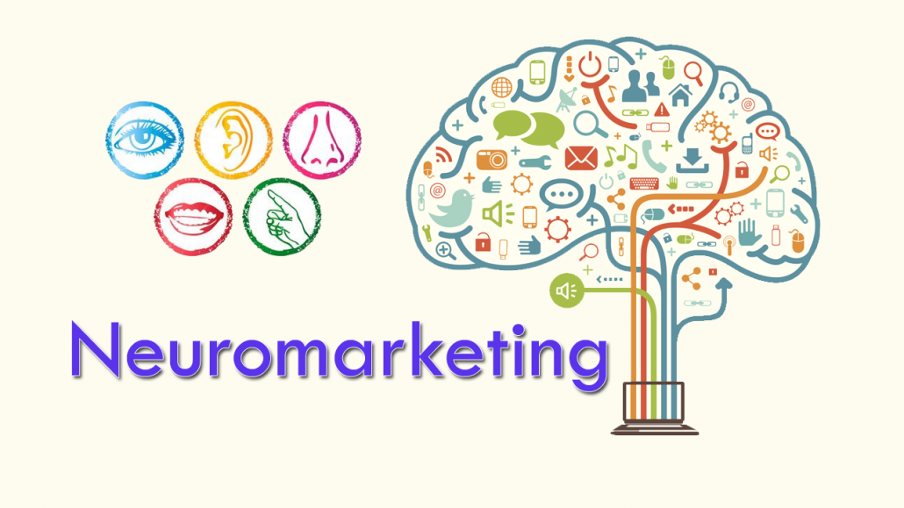

<div class="wrapper">
  <div class="content">
    <p>
      Neuromarketing is a commercial marketing communication field that applies
      neuropsychology to market research, studying consumers' sensorimotor,
      cognitive, and affective responses to marketing stimuli. The potential
      benefits to marketers include more efficient and effective marketing
      campaigns and strategies, fewer product and campaign failures, and
      ultimately the manipulation of the real needs and wants of people to suit
      the needs and wants of marketing interests. Certain companies,
      particularly those with large-scale ambitions to predict consumer
      behavior, have invested in their own laboratories, science personnel, or
      partnerships with academia. Neuromarketing is still an expensive approach;
      it requires advanced equipment and technology such as magnetic resonance
      imaging (MRI), motion capture for eye-tracking, and the
      electroencephalogram. Given the amount of new learnings from neuroscience
      and marketing research, marketers have begun applying neuromarketing best
      practices without needing to engage in expensive testing.
    </p>
    <p>
      Collecting information on how the target market would respond to a product
      is the first step involved for organisations advertising a product.
      Traditional methods of marketing research include focus groups or sizeable
      surveys used to evaluate features of the proposed product. Some of the
      conventional research techniques used in this type of study are the
      measurement of cardiac electrical activity (ECG) and electrical activity
      of the dermis (EDA) of subjects. However, it results in an incompatibility
      between market research findings and the actual behavior exhibited by the
      target market at the point of purchase. Human decision-making is both a
      conscious and non-conscious process in the brain, and while this method of
      research succeeded in gathering explicit (or conscious) emotions, it
      failed to gain the consumer's implicit (or unconscious) emotions.
      Non-conscious information has a large influence in the decision-making
      process. The concept of neuromarketing combines marketing, psychology and
      neuroscience. Research is conducted around the implicit motivations to
      understand consumer decisions by non-invasive methods of measuring brain
      activity. These include electroencephalography (EEG),
      magnetoencephalography (MEG), and functional magnetic resonance imaging
      (fMRI), eye tracking, electrodermal response measures and other
      neuro-technologies. Researchers investigate and learn how consumers
      respond and feel when presented with products and/or related stimuli.
      Observations can then be correlated with the participants' surmised
      emotions and social interactions. Market researchers use this information
      to determine if products or advertisements stimulate responses in the
      brain linked with positive emotions. The concept of neuromarketing was
      therefore introduced to study relevant human emotions and behavioral
      patterns associated with products, ads and decision-making. Neuromarketing
      provides models of consumer behavior and can also be used to re-interpret
      extant research. It provides theorization of emotional aspects of consumer
      behavior. Consumer behavior investigates both an individual's conscious
      choices and underlying brain activity levels. For example, neural
      processes observed provide a more accurate prediction of population-level
      data in comparison to self-reported data. Neuromarketing can measure the
      impacts of branding and market strategies before applying them to target
      consumers. Marketers can then advertise the product so that it
      communicates and meets the needs of potential consumers with different
      predictions of choice. Neuromarketing is also used with big data in
      understanding modern-day advertising channels such as social networking,
      search behavior, and website engagement patterns. Agencies like Darling
      help organizations use this kind of neuroscience in their marketing to
      better communicate with consumers at the subconscious level.
    </p>
    
  </div>
</div>
